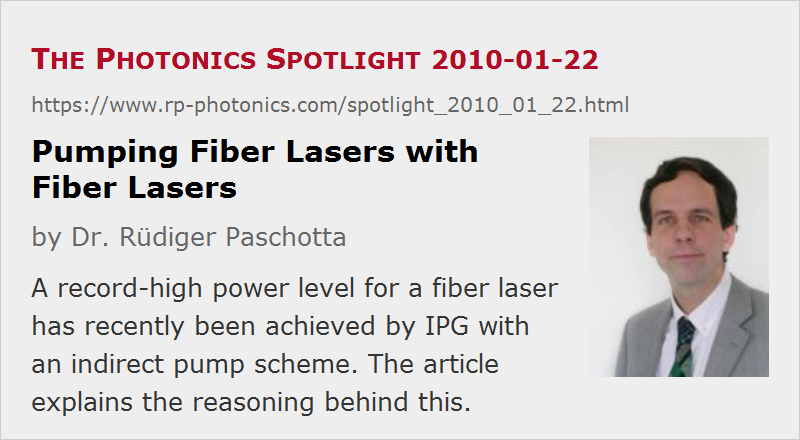

Pumping Fiber Lasers with Fiber Lasers
Posted on 2010-01-22 as a part of the Photonics Spotlight (available as e-mail newsletter!)
Permanent link: https://www.rp-photonics.com/spotlight_2010_01_22.html
Author: Dr. Rüdiger Paschotta, RP Photonics Consulting GmbH
Abstract: A record-high power level for a fiber laser has recently been achieved by IPG with an indirect pump scheme. The article explains the reasoning behind this.

Ref.: encyclopedia articles on fiber lasers, high-power fiber lasers and amplifiers, fiber lasers versus bulk lasers
In recent years, the possible output power for fiber lasers has been increased enormously. At multi-kW power levels, however, things get difficult. Thermal effects could be kept under control by using longer fibers, but fiber nonlinearities force one to go for shorter fibers, and the limited brightness of the pump diodes introduces further restrictions.
In this situation, IPG has chosen a route which may be surprising: using several ytterbium-doped fiber lasers, emitting at 1018 nm, for pumping a very high-power ytterbium-doped fiber laser with emission around 1070 nm. At a first glance, one may think that pumping at 1018 nm, where the pump absorption is much weaker than at 975 nm or 940 nm, for example, is no good idea. However, the outputs of several 1018-nm fiber lasers can be combined into a single fiber core with only 100 μm diameter – rather small, comparing with the usual pump cores as needed in conjunction with high-power laser diodes. Due to the small cladding-to-core area ratio of the double-clad fiber which one can then use, the pump absorption is in the end quite good, and the small quantum defect for 1018-nm pumping mitigates the thermal problems. Therefore, a relatively short fiber for the final laser can be used. A 10-kW laser with nearly diffraction-limited beam quality has been demonstrated by IPG this year.
Unfortunately, this technical approach does not only lead to a more complex setup, but also reduces significantly the wall-plug efficiency. Comparing with other types of high-power lasers, however, the efficiency is still rather good.
Clearly, the times are over where great further power increases are possible with fiber lasers just by optimizing design and components. But there is plenty of stuff, of course, which can be done with the power level reached already. So we can expect a lot of progress on the side of laser applications.
This article is a posting of the Photonics Spotlight, authored by Dr. Rüdiger Paschotta. You may link to this page and cite it, because its location is permanent. See also the RP Photonics Encyclopedia.
Note that you can also receive the articles in the form of a newsletter or with an RSS feed.
Questions and Comments from Users
Here you can submit questions and comments. As far as they get accepted by the author, they will appear above this paragraph together with the author’s answer. The author will decide on acceptance based on certain criteria. Essentially, the issue must be of sufficiently broad interest.
Please do not enter personal data here; we would otherwise delete it soon. (See also our privacy declaration.) If you wish to receive personal feedback or consultancy from the author, please contact him e.g. via e-mail.
By submitting the information, you give your consent to the potential publication of your inputs on our website according to our rules. (If you later retract your consent, we will delete those inputs.) As your inputs are first reviewed by the author, they may be published with some delay.
|  |
If you like this page, please share the link with your friends and colleagues, e.g. via social media:
These sharing buttons are implemented in a privacy-friendly way!